Xin Sun (孙鑫)
PhD Student, University of Science and Technology of China (USTC)
Institute of Automation, Chinese Academy of Sciences (CASIA)
I am a PhD student at USTC, jointly supervised by Prof. Liang Wang (IEEE Fellow) and Associate Prof. Qiang Liu at the National Laboratory of Pattern Recognition (NLPR), CASIA. Since May 2026, I have been an Ant Star Intern in the Machine Intelligence Division at Ant Group, where I lead projects on Retrieval-Augmented Generation and LLM Agent Training.
My research focuses on Retrieval-Augmented Generation (RAG) and LLM Agent Training, spanning two core directions: (1) RAG & Deep Search — building reliable and adaptive retrieval-augmented systems that know when, what, and how to retrieve, toward autonomous deep research agents; (2) LLM Agent Training — empowering LLM-based agents through reinforcement learning and post-training to perform multi-turn exploration, tool use, structured reasoning, and learning from environment feedback. During my PhD, I have published 7 first-/co-first-author papers in top-tier conferences and journals, including 6 rated A by CCF or TH-CPL.
News
- 2026.08 One paper accepted to Findings of EMNLP 2026: GAPD! [arXiv]
- 2026.08 Two new co-first-author papers under review at AAAI 2027: EviSD and HopRefusalBench. [EviSD] [HopRefusalBench]
- 2026.05 One paper accepted at ICML 2026: KBQA-R1!
- 2026.01 One paper accepted at ICASSP 2026: Predict the Retrieval!
- 2025.12 New preprint: KBQA-R1 — Reinforcing LLMs for Knowledge Base Question Answering. [arXiv]
- 2025.05 One paper accepted at ACL 2025 (Main Conference): Divide-Then-Align.
- 2024.11 Joined Ant Group's Machine Intelligence Division, working on RAG.
- 2024.10 Received the National Scholarship for Graduate Students (2024).
Publications
Explore the papers, code, and ideas behind my research. Click a figure to take a closer look. * Equal contribution.
-
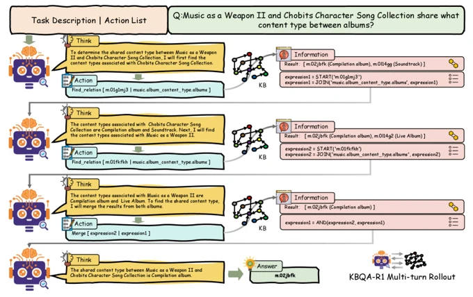
Framework overviewKBQA-R1: Reinforcing Large Language Models for Knowledge Base Question Answering
Grounding multi-turn reasoning in executable knowledge base actions.
 ICML 2026 CCF-A
ICML 2026 CCF-A -
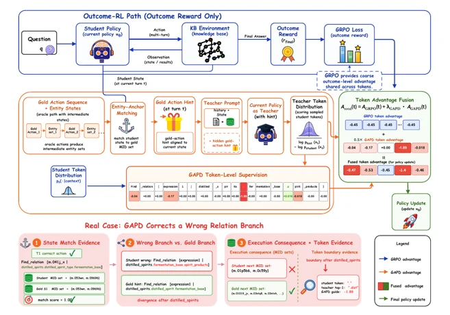
Framework overviewGAPD: Gold-Action Policy Distillation for Agentic Reinforcement Learning in Knowledge Base Question Answering
Gold-action policy distillation for agentic reinforcement learning.
 EMNLP 2026, Findings TH-CPL A
EMNLP 2026, Findings TH-CPL A -
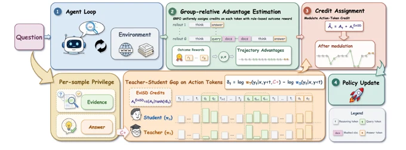
Framework overviewEviSD: Evidence-Conditioned Self-Distillation for Search-Augmented Agents
Evidence-conditioned self-distillation for search-agent credit assignment.
-
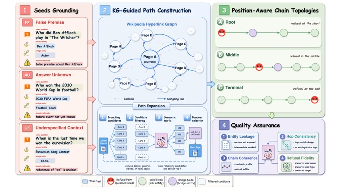
Framework overviewHopRefusalBench: Diagnosing Refusal Failures in Search-Augmented Agents for Multi-Hop Reasoning
Diagnosing refusal behavior across multi-hop search trajectories.
-
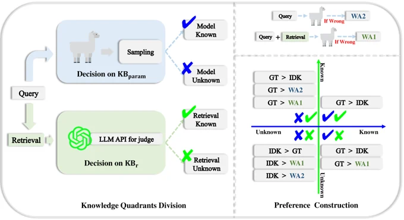
Framework overviewDivide-Then-Align: Honest Alignment based on the Knowledge Boundary of RAG
Aligning answers and abstention with the knowledge boundary of RAG.
 ACL 2025, Main Conference CCF-A
ACL 2025, Main Conference CCF-A -
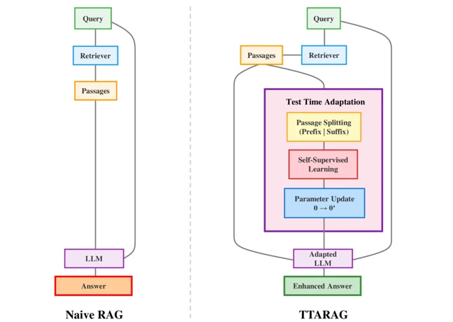
Framework overviewPredict the Retrieval! Test Time Adaptation for Retrieval Augmented Generation
Adapting retrieval-augmented generation at test time.
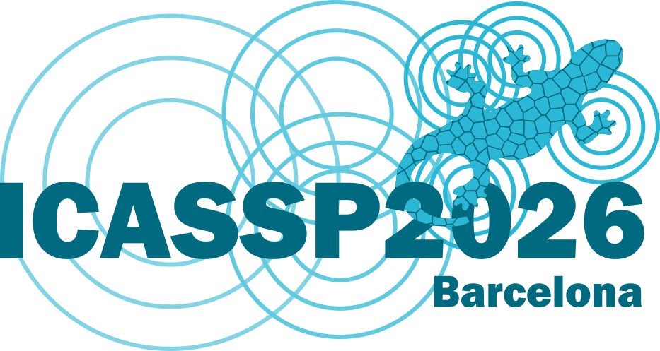
ICASSP 2026 CCF-B -
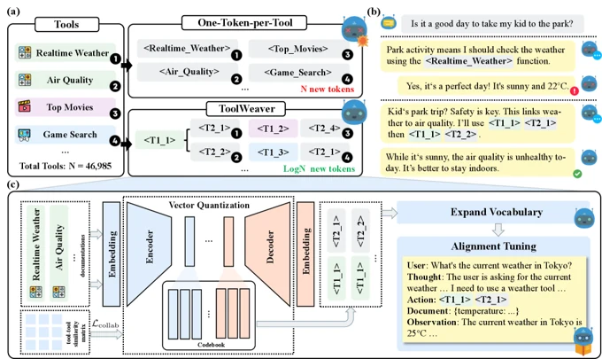
Framework overviewToolWeaver: Weaving Collaborative Semantics for Scalable Tool Use in Large Language Models
Learning compositional tool codes from semantics and collaborative use.
 ICLR 2026 CAAI-A
ICLR 2026 CAAI-A -
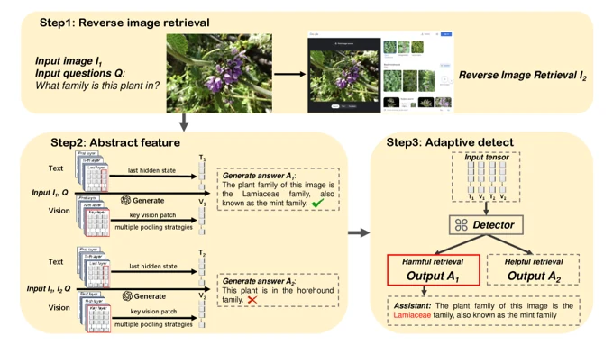
Framework overviewMultimodal Adaptive Retrieval Augmented Generation through Internal Representation Learning
Learning when to use retrieved visual evidence from internal representations.
{kind=link}
{kind=link}
{kind=link}
{kind=link}
{kind=link}
{kind=link}
{kind=link}
{kind=link}
-
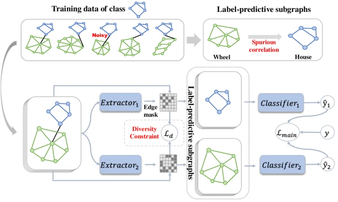
Framework overviewDIVE: Subgraph Disagreement for Graph Out-of-Distribution Generalization
Encouraging diverse subgraph patterns for out-of-distribution generalization.
 KDD 2024 CCF-A
KDD 2024 CCF-A -
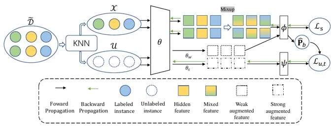
Framework overviewNoise-Robust Semi-Supervised Learning for Distantly Supervised Relation Extraction
Combining confident sample selection with noise-robust semi-supervised learning.
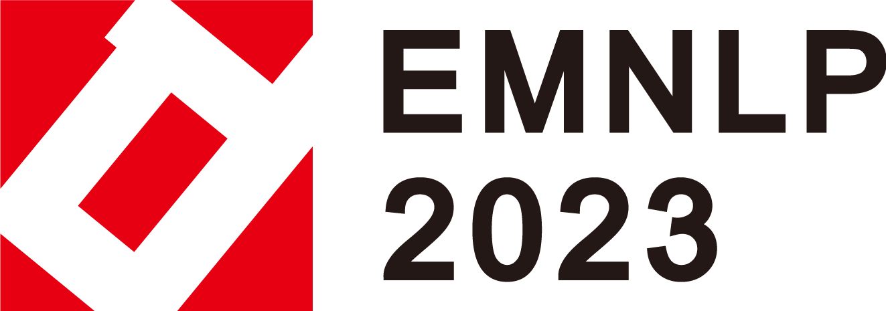
EMNLP 2023, Findings TH-CPL A -
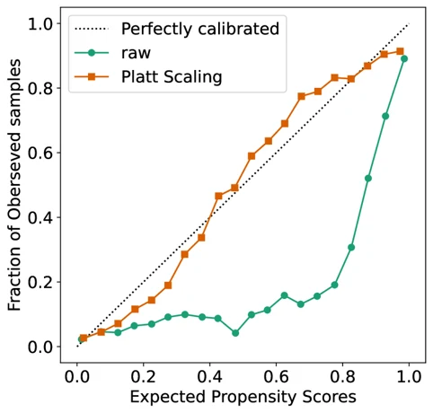
Calibration resultUncertainty Calibration for Counterfactual Propensity Estimation in Recommendation
Calibrating propensity estimates for recommendation with selection bias.
-
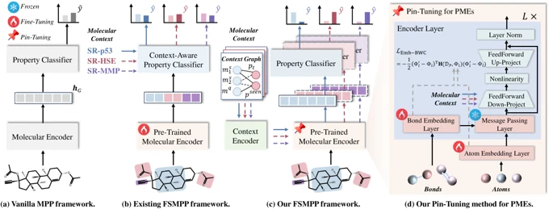
Framework overviewPin-Tuning: Parameter-Efficient In-Context Tuning for Few-shot Molecular Property Prediction
Parameter-efficient in-context tuning for few-shot molecular prediction.
 NeurIPS 2024 CCF-A
NeurIPS 2024 CCF-A -
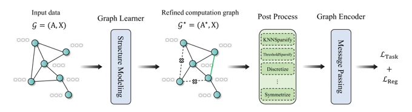
Framework overviewGSLB: The Graph Structure Learning Benchmark
Benchmarking graph structure learning across effectiveness, robustness, and complexity.
NeurIPS 2023 CCF-A
{kind=link}
{kind=link}
{kind=link}
{kind=link}
{kind=link}
Experience

Ant Group
Nov 2024 – PresentMachine Intelligence Division — Hangzhou, ChinaJoined as a research intern in Nov 2024 and became an Ant Star Intern in May 2026. Led core RAG and agent research:
- Honest alignment for RAG
- Multimodal adaptive RAG
- Test-time adaptation for RAG
- Agentic RL for knowledge base QA
- Search-agent credit assignment & refusal evaluation

ByteDance
Feb 2022 – Aug 2022Machine Learning Engineer Intern, AML — Beijing, ChinaDeveloped an AutoML platform for multivariate time series forecasting.
Education
University of Science and Technology of China (USTC)
2022 – 2027 (Expected)Ph.D. in Control Science and Engineering (Joint with CASIA)- National Laboratory of Pattern Recognition (NLPR), CASIA
- Advisors: Prof. Liang Wang (IEEE Fellow), Assoc. Prof. Qiang Liu
- National Scholarship for Graduate Students (2024)
- First-class Academic Scholarship (2022–2025, 3 consecutive years)
Shanghai Jiao Tong University (SJTU)
2018 – 2022B.Eng. in Computer Science and Technology- National Encouragement Scholarship (2019–2022)
- SJTU Academic Scholarship
Academic Service
Reviewer: ICML 2026, NeurIPS 2025, ACL 2025, EMNLP 2025, KDD 2024